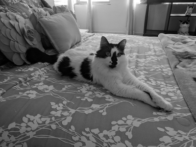

Sitters
Ana
Gage
Dima
Jackson

Barsik
Gal
Our Qualifications
All Cactus Cat Sitters are trained in Jackson Galaxy's cat behaviorist "catify-ing" methodologies.
What does this mean? Our sitters know why your cat is scratching your furniture and provide solutions to curtail this behavior.
Our sitters know why your cat marks a particular territory and provide solutions to improve your home environment.
Our sitters know what makes your cat tick.
This invaluable knowledge is what makes Cactus Cat Sitter a leader in specialized pet care.
Each of the sitters at Cactus Cat Sitter volunteer at animal shelters in their free time.
Our sitters are constantly learning and improving their skills sets within the company's training programs and outside of the company's training programs.
You can rest assured that your beloved feline is in the hands of a capable caretaker that knows the latest in standard and emergency cat care protocols.
At Cactus Cat Sitter, each sitter owns cats.
Our sitters know what it is like to have these wonderful cat creatures woven into the day-to-day.
Our sitters truly care about cats, whether that be the sitter's own cats, your cats, or all cats out there in the world.